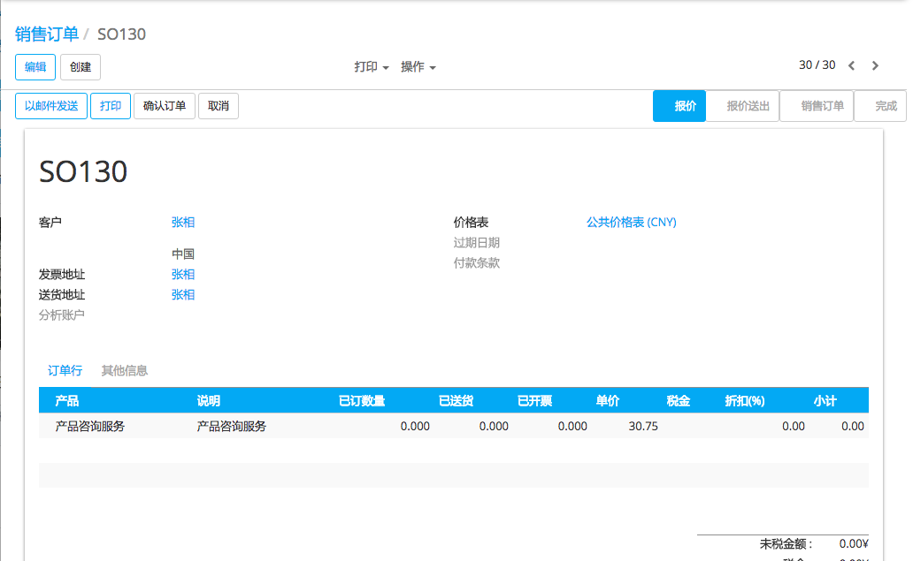
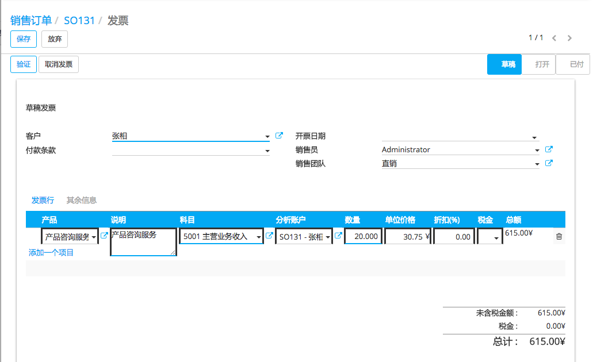
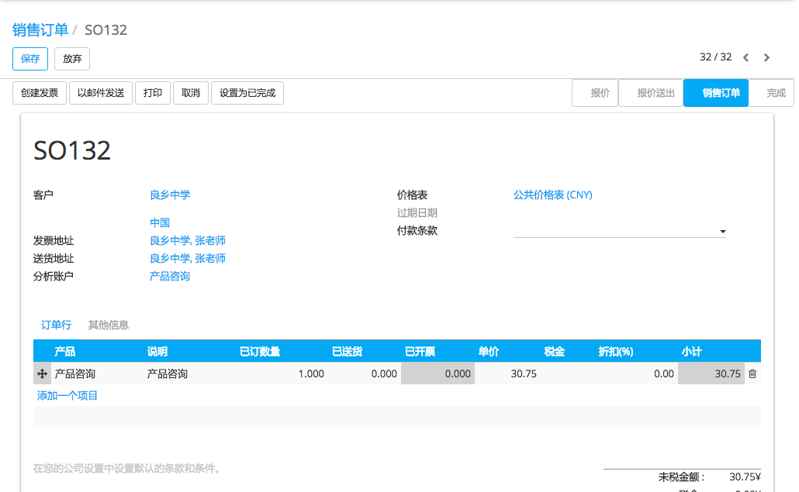
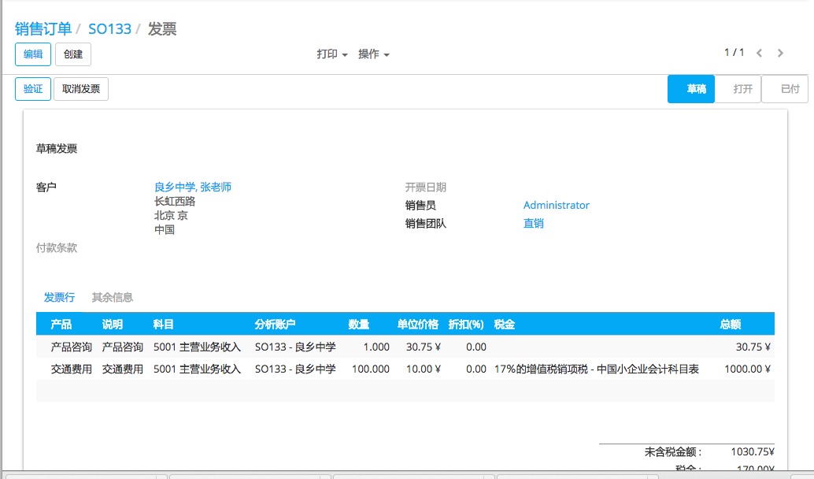

如果你的员工在为您的客户的项目工作时经常花自己的个人的钱。别如，在与您的客户开会时我们的员工支付了停车位费用。作为一家公司，你希望能够将此花费开票给你的客户。
在该文档中，我们将看到两个用例。第一，非常基本的，一个简单的费用的开票给您的客户就像为一个产品所做的那样。第二个，更先进，由您的员工进入你的费用系统直接开票给你的客户。
用例 1：简单的费用开票
以下作为示例，你正在给其中的一个客户(Agrolait)升级并且你需要打印很多复印件，这些复印件作为公司的费用并且需要为之开票
配置
为了销售服务和发送发票，你需要从**Apps** 图标安装**销售**模块。

创建费用产品
那么现在你就需要创建一个命名为“复印”的产品
在 销售 模块下, 进入 并创建一个如下产品：
产品类型: 耗用品
[UNKNOWN NODE problematic]开票原则 [UNKNOWN NODE problematic]：基于发货数量(你需要对销售订单的发票手工设定数量)
创建销售订单
现在产品已经设置好了，就可以创建该产品的销售订单(从 )，数量设置为0。点击 确认订单 确认为销售订单。随后你可以手工的在销售订单上更改产品数量在同一张发票单上给客户重复开票
开据客户费用发票
到了月末，你已经为客户打印了1000份并且你想要对他们重新开票。就可以从相关的销售订单上点击**发货数量**，手工的输入复印件数量并点击***保存*。订单行就变为蓝色，意味着可以开票。然后点击***创建发票*
注解
销售订单上的总数量是0因为发票是基于发货数量的。发票会根据发给该客户的正确的数量进行计算
生成的发票是草稿状态，所以你总是可以控制数量并且变更总量。你能注意到要开票的数量是基于发货的数量
点击确认让客户付款
用例2：通过费用模块给费用开票
要解释这个，让我们假设你的公司卖给你的顾客``Agrolait``一些咨询服务并且双方都同意贵司顾问的路费作为成本来开票
配置
现在，你需要再安装两个模块
费用追踪
需要在会计模块的设置中激活辅助核算会计
创建一个费用类别的产品
现在你需要创建一个称之为 [UNKNOWN NODE problematic]公里``的产品。
在 销售 模块下, 进入 并创建一个如下产品：
可以被报销的产品
产品类型: 服务
开票策略：基于记工单开票
费用类的开票原则：基于成本
追踪服务：手工的在订单上设置数量
创建销售订单
仍是从销售模块，进入菜单项 并在订单行上添加产品 咨询 。
小技巧
如果产品还不存在，我们可以在销售订单上即时的创建。只需要在**产品**字段输入产品名称并点击**创建编辑**就可以创建
根据产品的配置，一个**分析科目**可以自动的生成，如果没有的话，你也可以容易的创建一个，用来在销售订单上链接费用。不要忘了确认销售订单
注解
参考文档 ：文档：[UNKNOWN NODE title_reference] 中可以了解概念
创建相关费用单据并关联到销售订单(SO)
假设你们公司的顾问在十月份在咨询项目上的路程是``1.000公里`` 。你就可以创建一个费用并且通过分析账户和相关的销售订单关联起来
进入**费用**模块并点击**创建**。输入以下费用：
费用描述 : 2015年10月份公里数
产品：公里数
数量: 1.000
分析账户 : SO0019 - Agrolait
点击**提交给经理**。只要费用被批准后就会传到会计分录，一个和费用一致的分录记录就会咋订单上自动生成
开据客户费用发票
现在就可以把所有发票行开票给你的客户了
